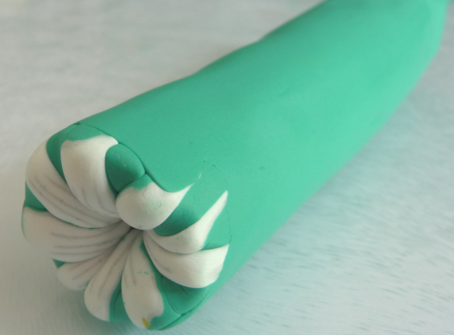

Beads Page
Learn how to shape your creativity!
Interested in learning how to make beads? Congratulations you have made it to the right spot! Below there are different sets of step-by-step instructions complete with images. You are welcome to navigate through to each one to have a look.
Materials and tools.
1 / 6

There are an unlimited number of different designs you can make.
2 / 6
There are many different brands and colors to choose from. Fimo is a good brand. Fimo Soft is easy to work with. You will want to store them in a container.
3 / 6
A thin smooth blade is need for making clean slises in the clay. It's nice to have a package of them.
4 / 6
A rolling pin is nice to have so you can roll the clay flat.
5 / 6
A hard clean surface like a glass cutting board is good to have. I would also recomend latex gloves if you don't want fingerprints on your beads.
6 / 6
A glass pan will be needed to bake in the oven.
How to make flower petals with clay.
1 / 13
Take white clay and roll into cylinder 3 inches long and 1.5" thick.
2 / 13
Take grey clay for the edge, roll to aproximately 2mm thick.
3 / 13
Wrap white cylinder in gray clay.
4 / 13

Wrap it just a little over half, then cut it.
5 / 13
Take a small amount of green.
6 / 13
Flatten the green clay to the same thickness as you did the grey clay.
7 / 13
Wrap it a little over half so its covering the grey.
8 / 13
Cut the green clay.
9 / 13
Make 1 slits along the cylinder about 1cm deep.Then make a clit on either side slightly deeper.
10 / 13
Pry open the slits in the white cylinder. Cut a strip of grey clay and insert into the center of each slit.
11 / 13
Squish it evenly across cylinder and stretch small and shaping it in a triangle with rounded corners.
12 / 13
Stretch and shape it evenly until it until it is approximately 32cm.
13 / 13
Cut out 9 petals as evenly as possible.
How to make flower body with clay.
1 / 7
Position the petals evenly around flower center.
2 / 7

Take green clay and roll it out to a thickness that looks like it would fit inside the gaps. Cut nine pieces the same length as flower center and petals.
3 / 7
Wedge the triangle pieces into the gaps.
4 / 7
Take grredn clay and flatten it out.
5 / 7
Wrap the flattened green clay around flower cylinder.
6 / 7

Squeeze, roll, pull and stretch to remove trapped air. Keep doing the same thing until it is the desired size.
7 / 7
It is good to have one side smaller than the other so you can do more things with the different sizes. You can store it in plastic wrap for later use.
How to bake and add finish gloss on clay beads.
1 / 3
You will need something to cook your beads in. Glass is the best, but you can use a foil pan or a pan wrapped in tin foil.
2 / 3

You can use shish kabob sticks or knitting needles to set the beads on, or just lay them flat on glass or tin foil. preheet oven to 250-degrees F. Let them cook about 20 to 30 minutes for each 1/4 inch thickness of clay. Let beads cool before removing them.
3 / 3
When fully cooled, using a piece of 1.2mm wire to hold the bead, varnish it with lacquer. Place it somewhere to dry up off the ground.